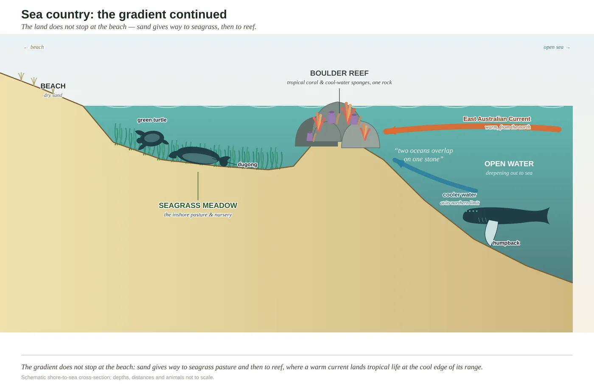

Stop 1 of 6 · Reef → range
The cue
Warm, clear water over a rocky headland — and hard coral growing a fin's length from a cool-water sponge.
Sea country & reef
The land's gradient doesn't stop at the beach. It runs on underwater, through seagrass meadows and sand flats to the headland reefs — the far, wet end of one continuous slope from the range to the reef.
Why it's here — the reading
Rock
Drowned bedrock and a floor of sand and rubble.
Soil
None — bare seabed, seagrass and reef.
Water
Fully marine, and the warm current meets cooler water here.
Fire
—
Life
Tropical coral beside cool-water sponge on one rock — the current's handiwork.
Read it yourself — look for
- Coral and sponge sharing a single boulder
- Reef fish moving in steady pairs
- Pipis and ghost crabs working the surf beach
- A humpback's spout past the break, in winter
